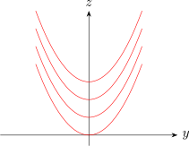
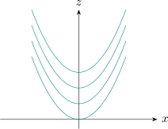
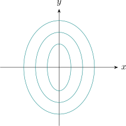
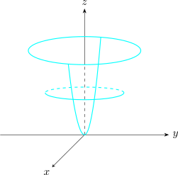
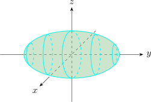
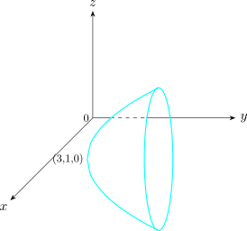

2 Surfaces
A surface in space is the two-dimensional analogue of a curve in the plane, and this short section develops the two ways of describing one.
The first is implicit: a surface as the set of points satisfying a single equation, as a sphere satisfies \(x^2+y^2+z^2 = a^2\). The second is parametric: a surface as the image of a map from a region of the plane, with two parameters playing the role that one plays along a curve. Each description makes different things easy, and moving between them is a recurring technical step.
Cylindrical and spherical coordinates are introduced here rather than later because the surfaces that suit them — cylinders, cones, spheres — are exactly the ones whose equations become simple in them, and that simplicity is what makes the triple integrals of the next section tractable.
Tangent planes are treated for both descriptions. The tangent plane is the linear approximation of the previous section made geometric, and its normal direction is the gradient.
Quadric Surfaces
In the plane, the graph of a second-degree equation \[Ax^2 + Bxy + Cy^2 + Dx + Ey + F = 0\] is a conic section: an ellipse, parabola or hyperbola, apart from degenerate cases. In space, the graph of a second-degree equation in \(x\), \(y\) and \(z\), \[Ax^2 + By^2 + Cz^2 + Dxy + Eyz + Fxz + Gx + Hy + Iz + J =0,\] is a quadric surface, again apart from degenerate cases. By rotating and translating the axes the cross terms \(Dxy\), \(Eyz\), \(Fxz\) can always be removed, so only the case \(D = E = F = 0\) is considered here.
The tool for recognising a surface is the trace: the curve in which the surface meets a plane. Traces in planes parallel to the coordinate planes (\(x = k\), \(y = k\) or \(z = k\)) are curves in the plane, usually conics, and fitting them together reveals the surface.
Solution. The trace in the plane \(x = k\) is \(z = 4k^2 + y^2\), a parabola opening upward in the \(yz\)-direction with vertex at height \(4k^2\); \(x = 0\) gives \(z = y^2\).

The trace in the plane \(y = k\) is \(z = 4x^2 + k^2\), again a parabola, narrower since the coefficient of \(x^2\) is larger; \(y = 0\) gives \(z = 4x^2\).

The trace in the plane \(z = k\) is \(4x^2 + y^2 = k\): for \(k>0\) an ellipse, with semi-axes \(\frac {\sqrt k}{2}\) and \(\sqrt k\); for \(k = 0\) the single point \((0,0)\); and for \(k<0\) nothing, so the surface lies on and above the \(xy\)-plane.

Horizontal ellipses and vertical parabolas together describe an elliptic paraboloid, a bowl opening upward along the \(z\)-axis.

The six non-degenerate quadric surfaces with centre or vertex at the origin, in standard position, are listed below; in each case the axis of the surface is the \(z\)-axis, and the roles of the variables can be permuted.
| Surface | Equation | Horizontal traces (\(z = k\)) |
| Ellipsoid | \(\frac {x^2}{a^2} + \frac {y^2}{b^2} + \frac {z^2}{c^2} = 1\) | ellipses, for \(|k|<c\) |
| Elliptic paraboloid | \(\frac {z}{c} = \frac {x^2}{a^2} + \frac {y^2}{b^2}\) | ellipses |
| Hyperbolic paraboloid | \(\frac {z}{c} = \frac {x^2}{a^2} - \frac {y^2}{b^2}\) | hyperbolas |
| Cone | \(\frac {z^2}{c^2} = \frac {x^2}{a^2} + \frac {y^2}{b^2}\) | ellipses |
| Hyperboloid of one sheet | \(\frac {x^2}{a^2} + \frac {y^2}{b^2} - \frac {z^2}{c^2} = 1\) | ellipses, for every \(k\) |
| Hyperboloid of two sheets | \(-\frac {x^2}{a^2} - \frac {y^2}{b^2} + \frac {z^2}{c^2} = 1\) | ellipses, for \(|k|>c\) |
A useful rule: the number of minus signs on the left of a centred equation equal to \(1\) is the number of sheets, and the variable whose square has the odd sign out is the axis.
Solution. The trace in the plane \(x = k\) is \[\frac {y^2}{9}+ \frac {z^2}{4} = 1 -k^2 ,\] an ellipse when \(k^2<1\), a point when \(k = \pm 1\), and empty when \(|k|>1\). The traces \(y = k\) are the ellipses \(x^2 + \frac {z^2}{4} = 1-\frac {k^2}{9}\) for \(|k|<3\), and the traces \(z = k\) are the ellipses \(x^2 + \frac {y^2}{9} = 1- \frac {k^2}{4}\) for \(|k|<2\). All traces are ellipses, so the surface is an ellipsoid, meeting the axes at \((\pm 1,0,0)\), \((0,\pm 3,0)\) and \((0,0,\pm 2)\).

Solution. Complete the square in \(x\): \[(x^2 -6x + 9) + 2z^2 -y + 10 -9 =0,\qquad \text {that is}\qquad y-1 = (x-3)^2 + 2z^2 .\] With \(X = x - 3\), \(Y = y - 1\), \(Z = z\), this is \(Y = X^2 + 2Z^2\), an elliptic paraboloid with vertex \((3,1,0)\) whose axis is the line through the vertex parallel to the \(y\)-axis. It opens in the direction of increasing \(y\): the traces \(y = k\) are the ellipses \((x-3)^2 + 2z^2 = k - 1\) for \(k>1\).

Exercise 2.0.4. Use traces to identify and sketch the graphs of
- 1.
- \(16x^2 - 9y^2 + 36z^2 = 144\);
- 2.
- \(y^2 + 4z^2 =x\).
Answer: (1) Dividing by \(144\), \(\frac {x^2}{9} - \frac {y^2}{16} + \frac {z^2}{4} = 1\), a hyperboloid of one sheet with axis the \(y\)-axis (one minus sign); its traces \(y = k\) are ellipses for every \(k\). (2) An elliptic paraboloid with vertex at the origin, opening along the positive \(x\)-axis; its traces \(x = k>0\) are the ellipses \(y^2 + 4z^2 = k\).
Solution. The traces \(x = k\) are the parabolas \(z = y^2 - k^2\), opening upward; the traces \(y = k\) are the parabolas \(z = k^2 - x^2\), opening downward; and the traces \(z = k\) are the hyperbolas \(y^2 - x^2 = k\), which degenerate to the pair of lines \(y = \pm x\) when \(k = 0\). The surface is a hyperbolic paraboloid. Near the origin it rises along the \(y\)-axis and falls along the \(x\)-axis: the saddle surface of the saddle point in Example 1.5.4.
Solution. Dividing by \(-4\), \[-x^2 + \frac {y^2}{4} - \frac {z^2}{2} = 1 .\] Two minus signs, with \(y^2\) the odd one out: a hyperboloid of two sheets with axis the \(y\)-axis. The traces \(y = k\) are \(x^2 + \frac {z^2}{2} = \frac {k^2}{4} - 1\), ellipses when \(|k|>2\) and empty when \(|k|<2\), so the two sheets lie in \(y\geq 2\) and \(y\leq -2\).
2.2 Cylindrical and Spherical Coordinates
2.3 Tangent Planes
2.4 Parametric Surfaces
2.5 Tangent Planes To Parametric Surfaces
2.6 Tangent Planes To Level Surfaces
2.7 Practice Problems
Questions on this section
Stuck on something here? Ask below and it stays attached to this topic.